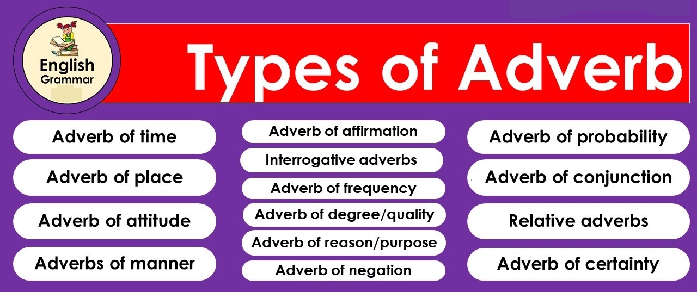

What is an Adverb?
An adverb is a word/a set of words that modifies verbs, adjectives, and other adverbs. It tells when, where, and how an action is performed or indicates the quality or degree of the action.

TYPES OF ADVERBS
- Adverbs of Time/Frequency :
- Adverbs of time/frequency indicate time or frequency of the action in the sentence. They answer the question ‘when/how frequently is the action performed?’.Examples:-
-
He
always
gets a good result.
-
I will leave
is
Monday.
- Adverbs of Place/Direction:
- Adverbs of place/direction that indicate place/direction of the action in the sentence. They answer the question ‘ where is the action performed?’. Examples:-
- I went
through the jungle.
- He plays
in the field
- Adverbs of Degree:
- Adverbs that express the importance/degree/level of the action in the sentence are called adverbs of degree. They answer the question ‘how much is the action performed?’. Examples:-
- She completely forgot about her anniversary.
- Robin hardly studies
- Adverbs of Manner :
- Adverbs that express the manner/approach/process of the action in the sentence are called adverbs of manner. They answer the question ‘how is the action performed?’. Examples:-
- Let's divide the prizes equally.
- Please, handle the camera carefully.
- Conjunctive Adverbs::
- A conjunctive adverb connects phrases or independent clauses. It provides transitions between ideas and shows relationships.
Conjunctive adverbs are also called connectors. Examples:-
- It rained last night.Nonetheless,the final match has not been canceled. going to school.
- We are still confused,however,if the umpires will come.
- Sentence Adverbs:
- A sentence adverb starts the sentence and modifies the whole sentence.
Examples:-
- Hopefully,we will win the match.
- Apparently,the sky is getting cloudy.